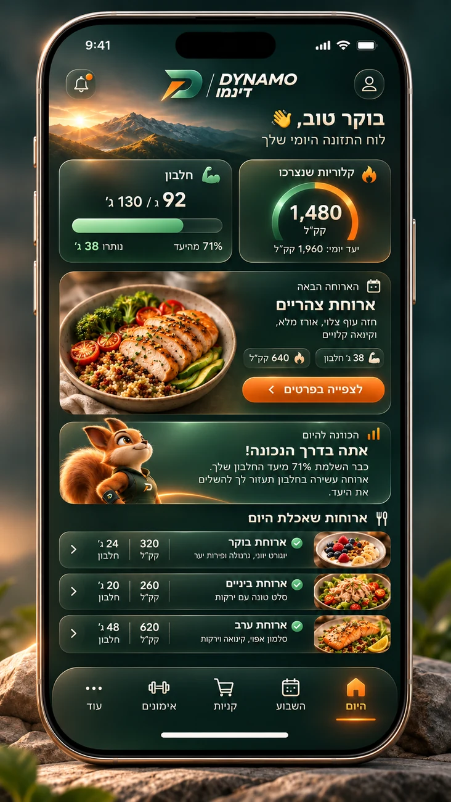

DYNAMO • DESIGN COLLECTION 2026
תזונה חכמה.
אופי בתנועה.
היכרות עם השפה החזותית של DYNAMO: שלושה מסכי מוצר, עולם מותג ודמות מלווה. לכל תחום — גרסאות נפרדות שאפשר לפתוח ולהשוות.
תזונהתכנוןקניות

01 / TODAYמבט על החוויה
01TODAY
היום שלי
תמונת מצב יומית של תזונה, התקדמות והארוחה הבאה.
גרסאות ותהליך העיצובבחרו גרסה להצגה
02WEEK
השבוע שלי
מבט שבועי על הימים, הארוחות והדרך אל היעדים.
גרסאות ותהליך העיצובבחרו גרסה להצגה
03SHOPPING
קניות ומזווה
ארגון המצרכים, בחירת כמויות ומבט על מה שכבר יש בבית.
גרסאות ותהליך העיצובבחרו גרסה להצגה
04BRAND SYSTEM
השפה החזותית
הסמל, הצבעים, הטיפוגרפיה והחומריות שמחברים את המותג.
גרסאות ותהליך העיצובבחרו גרסה להצגה
05THE COMPANION
עולם הסנאי
אותה דמות מלווה, ניטרלית מגדרית, במגוון הבעות ומצבי שימוש.
גרסאות ותהליך העיצובבחרו גרסה להצגה
DYNAMO / THE EXPERIENCE
שפה אחת.
הרבה אפשרויות.
עיצובים ויזואליים להמחשת החוויה והכיוון של DYNAMO.
חזרה להתחלה ↑